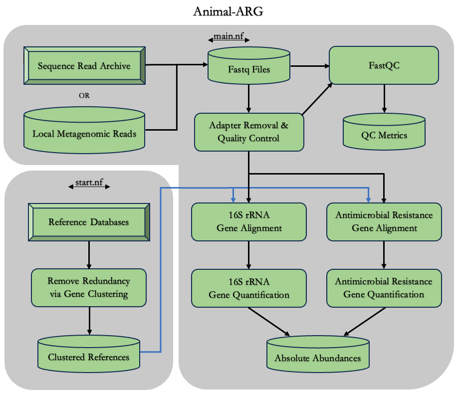

Animal-ARG Documentation
Basic Information
Animal-ARG is a nextflow pipeline for estimating Antimicrobial Resistance Gene (ARG) abundance in metagenomic samples. Primarily samples of animal agriculture origin such as Bovine, Swine, Ovine, and Poultry, that have been sequenced via shotgun metagenomics. Animal-ARG can utilze local genomic data, or pull genomic sequence data directly from the NCBI SRA for analysis.
This analytical framework is discussed extensively here:
Ackerson,Leland K.,,IV. Analytical Framework for Estimating Antimicrobial Resistance Gene Abundance in Metagenomic Samples
of Animal Agriculture Origin, Michigan State University, United States -- Michigan, 2023. ProQuest
Workflow Methodology

Methodology
1. Quality Control + Pre-Processing
- FastQC is performed on both the raw reads and post-processing clean reads.
- Results from quality control analysis are deposited in the 'QCmetrics' folder upon completion of the workflow proccesses.
- Adapter trimming and read quality filtering are performed using BBDuk (BBTools).
2. Download Reference Gene Databases
- ARG Reference: The Comprehensive Antibiotic Resistance Database (CARD)
- 16S rRNA Reference: GreenGenes Database
3. Prepare Reference Gene Catalog
- CD-HIT-EST is utilized to cluster each reference database and remove redundancy.
- Clustered references are indexed (BWA INDEX) prior to subsequent alignment.
4a. Antimicrobial Resistance Gene Mapping
- Reference Database: The Comprehensive Antibiotic Resistance Database (CARD).
- Alignement Software: BWA MEM
4b. 16s rRNA Gene Mapping
- Necessary for metagenome taxonomical quantification, and downstream normalization.
- Reference Database: GreenGenes Database
- Alignement Software: BWA MEM
5a. Antimicrobial Resistance Gene Quantification
- Estimate absolute abundance of ARGs
- Read mappings for each reference gene are summed
5b. 16s rRNA Gene Quantification
- Estimate absolute abundance of 16s rRNA Genes
- Read mappings for each reference gene are summed
Getting Started
This workflow's source code is available on GitHub: animalARG
1.) Clone the animalARG GitHub Repository
$ git clone https://github.com/LeeAckersonIV/CMSE890-602_FinalProject.git
$ cd CMSE890-602_FinalProject/
2.) HPCC Environment Set-Up
$ module load fastQC
$ module load BWA/0.7.17
$ module load nextflow
$ module load SAMtools
$ module load BEDtools
$ module load GCC/6.4.0-2.28
$ module load OpenMPI/2.1.1
3.) Prepare Default Reference Databases
$ nextflow run start.nf # execute start.nf script
N E X T F L O W ~ version 22.10.6
Launching `start.nf` [random_name] DSL2 - revision: [hashkey]
Download Defaults
===============================
SRA IDs : None Identified by User
ARG Database : https://card.mcmaster.ca/download/0/broadstreet-v3.2.2.tar.bz2
16S Database : https://gg-sg-web.s3-us-west-2.amazonaws.com/downloads/greengenes_database/gg_12_10/gg_12_10.fasta.gz
To download data from NCBI SRA, indicate the SRA ID upon start.nf execution.
This can be accomplished through the SRA_IDs parameter like so:
$ nextflow run start.nf --SRA_IDs 'SRS6485642' # execute start.nf, donwload SRA data
N E X T F L O W ~ version 22.10.6
Launching `start.nf` [random_name] DSL2 - revision: [hashkey]
Download Defaults
===============================
SRA IDs : SRS6485642
ARG Database : https://card.mcmaster.ca/download/0/broadstreet-v3.2.2.tar.bz2
16S Database : https://gg-sg-web.s3-us-west-2.amazonaws.com/downloads/greengenes_database/gg_12_10/gg_12_10.fasta.gz
4.) Perform Main AnimalARG Analysis
At this point, users are able to execute the main nextflow pipeline. Set-Up (start.nf) need only
be carried out once, and then the primary workflow can be continuously utilized (main.nf).
$ nextflow run main.nf # execute main.nf
N E X T F L O W ~ version 22.10.6
Launching `main.nf` [random_name] DSL2 - revision: [hashkey]
A N I M A L - A R G
===============================
SRA IDs : USER_Defined_List
Reads : /your/path/CMSE890-602_FinalProject/data/reads/*_{1,2}.fastq.gz
ARG Database : /your/path/CMSE890-602_FinalProject/data/DB/CARD_NR.99.fasta
16S Database : /your/path/CMSE890-602_FinalProject/data/DB/greenGenes_NR.99.fasta.gz
QC Analysis : /your/path/CMSE890-602_FinalProject/QCmetrics
Results : /your/path/CMSE890-602_FinalProject/results
Nextflow Parameterization
The following parameters accompany either the start.nf or main.nf script, and allow the user to adjust and or introduce various options they wish to include in the analysis performed by the nextflow pipeline. These can be altered via the command line interface (CLI) when exeuting nextflow by adding '--parameter "option" to the fundamental 'nextflow run {script}' command.
Example 1. Indicate an SRA ID you wish to download:
$ nextflow run start.nf --SRA_IDs 'SRS6485642'
Example 2. Indicate where local reads you wish to analyze are stored:
$ nextflow run main.nf --readsDir /somewhere/else/than/default/directory/
start.nf
params.SRA_IDs- Used to download genomic data from the SRA, simply indicate the SRA IDparams.ARG_db- Name of ARG reference file-
- Default = 'ARG_referenceDB.fasta'
-
params.ARG_db_URL- Link to website of the ARG database you wish to use-
- Default = URL for downloading CARD
-
params.ARG_db_NR- Name of NonRedundant (NR) ARG reference file after clustering-
- Default = 'ARG_referenceDB_NR99.fasta'
-
params.rRNA16S_db- Name of 16S rRNA reference file-
- Default = '16SrRNA_referenceDB.fasta.gz'
-
params.rRNA16S_db_URL- Link to website of the 16S rRNA database you wish to use-
- Default = URL for downloading GreenGenes
-
params.rRNA16S_db_NR- Name of NonRedundant (NR) 16S rRNA reference file after clustering-
- Default = '16SrRNA_referenceDB_NR99.fasta.gz'
-
params.DBdir- Directory where you wish to house the downloaded and processed databases-
- Default = '$baseDir/data/DB/'
-
params.readsDir- Directory that stores downloaded SRA reads, or location of local reads-
- Default = '$baseDir/data/reads/'
-
main.nf
params.SRA_IDs- Used to download genomic data from the SRA, simply indicate the SRA IDparams.CARD_db- Name and location of NonRedundant ARG reference file-
- Default = '$baseDir/data/DB/ARG_referenceDB_NR99.fasta'
-
params.GG_db- Name of location of NonRedundant 16S rRNA reference file-
- Default = '$baseDir/data/DB/16SrRNA_referenceDB.fasta.gz'
-
params.reads- Location of genomic reads that will be analyzed-
- Default = $baseDir/data/reads/*_{1,2}.fastq.gz; Note: Pipeline assumes reads are paired
-
params.readsDir- Directory that stores downloaded SRA reads, or location of local reads-
- Default = '$baseDir/data/reads/'
-
params.outdir- Directory where you wish to house the produced results (ARG Abundances)-
- Default = '$baseDir/results'
-
params.QC_files- Directory where you wish to house the FASTQC results-
- Default = '$baseDir/QCmetrics'
-
params.clean_reads- Directory where trimmed and quality controlled reads are stored-
- Default = '$baseDir/data/cleanReads/'
-
MkDocs Project Layout
mkdocs.yml # The configuration file.
docs/
index.md # The documentation homepage.
tutorial.md # Animal-ARG Tutorial
reference.md # Animal-ARG References
explain.md # Animal-ARG Explanation